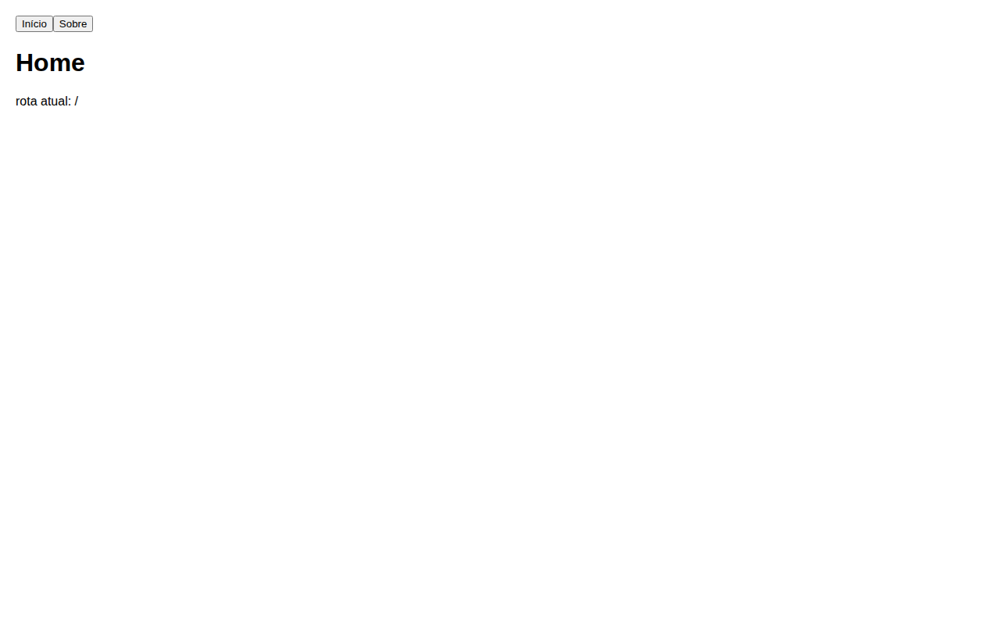

Navegação com Link
A Ana criou a página /sobre, mas até agora só dá para chegar nela digitando a URL. E se ela usar a tag <a> comum? A página recarrega inteira — adeus, velocidade do React. Nesta página você vai aprender o <Link> do Next.js, que navega sem recarregar e ainda deixa as próximas páginas pré-carregadas.
- Por que não usar
<a href>em apps Next.js (recarrega tudo) import Link from "next/link"e<Link href="/sobre">- Prefetch automático: rotas no viewport já são pré-carregadas
useRouterdonext/navigationpara navegar por código (router.push)- O erro real de importar
useRouterdo lugar errado
A ideia: <a> é ir de carroça, <Link> é o metrô com a próxima estação já aberta
Num site antigo, clicar num link é como descer do carro, desmontar a barraca e montar de novo no próximo camping: o navegador pede a página inteira nova ao servidor, joga todo o JavaScript fora e começa do zero — por isso a tela pisca branca e o menu some e volta. A tag <a href="/sobre"> faz exatamente isso: uma navegação "burra" de documento inteiro.
O <Link> do Next.js é como um metrô de app: ao clicar, ele troca só o "trecho" da viagem (a página), mantendo o resto do trem (o layout, o JavaScript, o estado) — a tela não pisca. E tem mais: o Next.js é esperto e faz o prefetch automático: quando um <Link> entra na tela (no viewport), ele já baixa em segundo plano o código da página de destino. Quando o usuário clica, a página já está pronta — a troca é praticamente instantânea. É como o metrô que já deixou a próxima estação com as portas abertas antes de você chegar.
Para navegação por código — por exemplo, depois de enviar um formulário, ir para outra página — usamos o hook useRouter, mas atenção: no App Router ele vem de next/navigation (não de next/router, que é o antigo). Com ele, a Ana faz router.push("/sobre") dentro de um evento.
Ana e o corredor interno do shopping: ir à loja ao lado sem sair na rua
Num shopping, para ir da loja de sapatos à livraria a Ana usa o corredor interno — não precisa sair na rua, pegar o carro e voltar. Clicar numa tag <a href> comum é sair na rua: o navegador recarrega a página inteira, perde o estado e pisca a tela. O <Link> do Next.js é o corredor interno: ele troca só o miolo da página e ainda pré-carrega a próxima página antes do clique — a troca é instantânea.
A regra da Ana é simples: dentro do app, navegação é sempre <Link>; <a> fica só para links externos (abrindo em outra aba, com target="_blank"). Assim o site dela tem cara de aplicativo — rápido, sem reload — e o botão voltar do navegador continua funcionando.
Montando o menu com Link
import Link from "next/link";
export default function Home() {
return (
<main>
<nav>
<Link href="/">Início</Link>
<Link href="/sobre">Sobre</Link>
</nav>
<h1>Página inicial</h1>
</main>
);
}
O href funciona igual ao do <a>, então a intuição continua valendo. A diferença está no comportamento: sem reload, com prefetch. Dá para estilizar o link ativo com o hook usePathname() (também de next/navigation) — mas isso já é assunto de componente client, que vem já já.

<Link href="/sobre">: ao entrar na tela, o Next.js já pré-carrega a rota.Navegação programática com useRouter
Quando a página precisa decidir para onde ir (depois de um clique em botão, por exemplo), usamos o useRouter — mas isso exige interatividade, então o componente precisa de "use client" no topo (você verá os detalhes no capítulo Server vs Client):
"use client";
import { useRouter } from "next/navigation";
export default function BotaoIr() {
const router = useRouter();
return (
<button onClick={() => router.push("/sobre")}>
Ir para Sobre
</button>
);
}
| Situação | Use | Import |
|---|---|---|
| Link no menu / texto clicável | <Link href="/sobre"> | next/link |
| Ir para outra rota no código | router.push("/sobre") | useRouter de next/navigation |
| Voltar na página anterior | router.back() | useRouter de next/navigation |
| Saber a rota atual (p/ link ativo) | usePathname() | next/navigation |
| Recarregar os dados da rota | router.refresh() | next/navigation |
Missão: adicione uma terceira rota ao menu: o botão Contato (que faz setRota("/contato")) e o conteúdo <h1>Contato</h1> no ternário. Assim como o <Link>, a página troca sem recarregar. Rode ▶ e ✔.
function App() {
const [rota, setRota] = React.useState("/");
return (
<div style={{ fontFamily: "sans-serif", padding: 20 }}>
<nav>
<button onClick={() => setRota("/")}>Início</button>
<button onClick={() => setRota("/sobre")}>Sobre</button>
</nav>
{rota === "/" && <h1>Home</h1>}
{rota === "/sobre" && <h1>Sobre</h1>}
<p>rota atual: {rota}</p>
</div>
);
}
function App() {
const [rota, setRota] = React.useState("/");
return (
<div style={{ fontFamily: "sans-serif", padding: 20 }}>
<nav>
<button onClick={() => setRota("/")}>Início</button>
<button onClick={() => setRota("/sobre")}>Sobre</button>
<button onClick={() => setRota("/contato")}>Contato</button>
</nav>
{rota === "/" && <h1>Home</h1>}
{rota === "/sobre" && <h1>Sobre</h1>}
{rota === "/contato" && <h1>Contato</h1>}
<p>rota atual: {rota}</p>
</div>
);
}
Quando dá errado
<a href="/sobre"> em vez de <Link> e percebeu que a página recarrega inteira (perde o estado, pisca branca):(não dá erro no console — é comportamento: a página faz full reload, o layout pisca e o estado dos componentes zera) Dica do guia: em app Next.js, use SEMPRE <Link> de "next/link" para rotas internas. Guarde o <a> só para links EXTERNOS (https://google.com).
import { useRouter } from "next/router"; ← errado no App Router
Module not found / hook não funciona como esperado.
Dica do guia: no App Router (pasta app/) o certo é:
import { useRouter } from "next/navigation";
("next/router" é só para projetos antigos com pasta pages/.)
Exercícios
1. Qual componente do Next.js a Ana deve usar para links internos (navegação sem recarregar)?
2. De onde vem o useRouter no App Router (pasta app/)?
Exercício 1
Escreva a linha de import correta para usar o componente Link do Next.js no App Router: